It was our first time attending this particular con! We chose to go on Saturday. We didn't think we would be interested in it enough to attend multiple days.
If you know anything about me, you know I know nothing about Western comic books! I watched The Dark Knight though! I've attended Emerald City Comic Con a couple times over 10 years ago. It was very different now. There was a LOT of anime here. A lot of the cosplayers were anime. This was very shocking because I used to be the only anime cosplayer at ECCC!
The first time we entered the building, it wasn't hard to find the entrance and security wanded us on our way in.
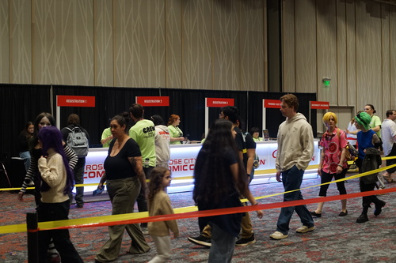
The registration line was really short! We ordered our badges the night before and only had to pick them up. We still had to walk the line maze (empty) to get to the front counter.
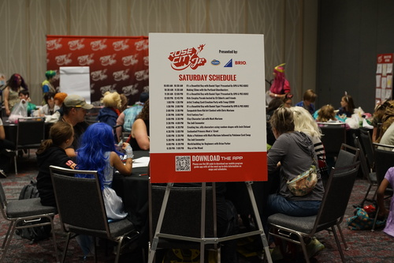
We didn't find any panels we wanted to attend, other than the artist trading card panel and trade (for children only), so we didn't attend any.
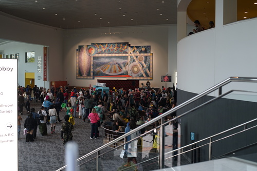
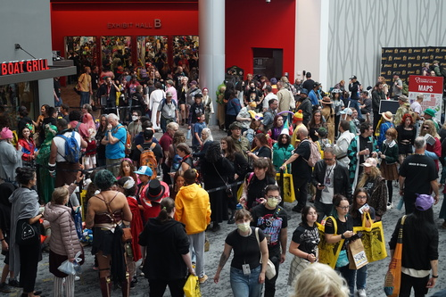
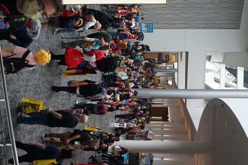
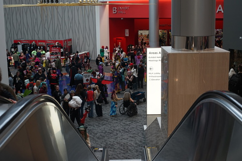
The con center felt far more crowded than it did during Kumoricon!
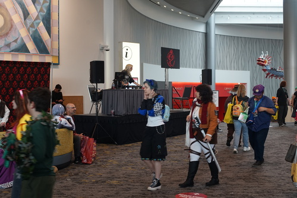
There was a DJ in the main lobby area.
I checked the exhibitors and artist list online before the con. I made a list of a few booths I wanted to go to and their location. I couldn't find one of the booths so I went back to the website to double check the booth location. The mobile version of the site did not show booth locations!! In addition, whoever created list of vendors and artists did not confirm that each had https:// in front of their site address, thus making the link a relative link and useless without modifying the URL. Total mess of a site.
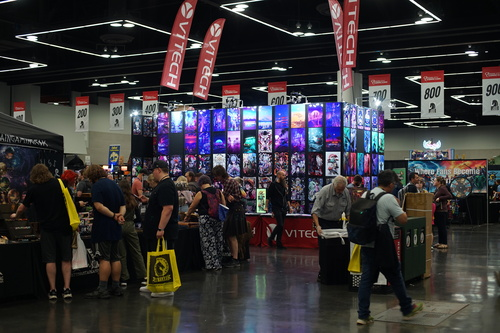
Friskies was at the con for some reason and had a large booth. They were printing trading cards of your cat for you and there was a long line to the booth. They required you to download an app to do it, so I skipped getting a beautiful print of my lovely feral cat.
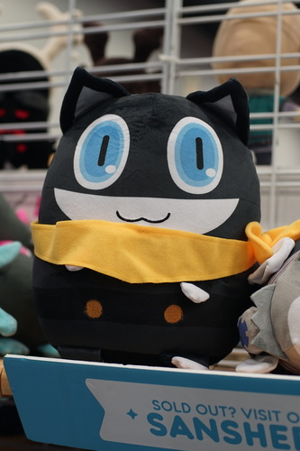
Sanshee had a new plushie at their booth. I love their Teddie plushie but I'm not quite sure went on here. All the face details are printed. So little effort compared to Teddie!!
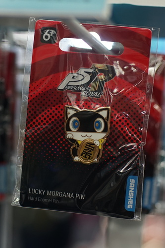
They did have this SUPER CUTE manekineko Morgana though!
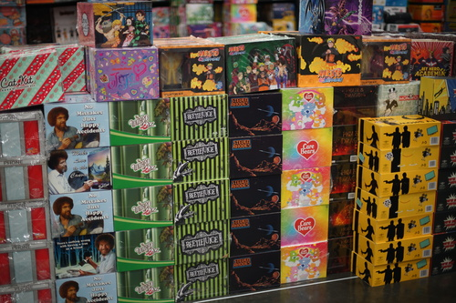
The attendees seemed to like buying signage and blind boxes. I had seen a bunch of people walking around with these cardboard IP branded boxes with handles. Some people were carrying like 5 of them! We eventually wandered into the booth that was selling them.
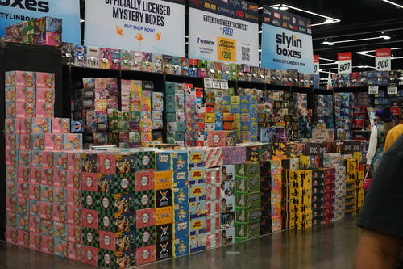
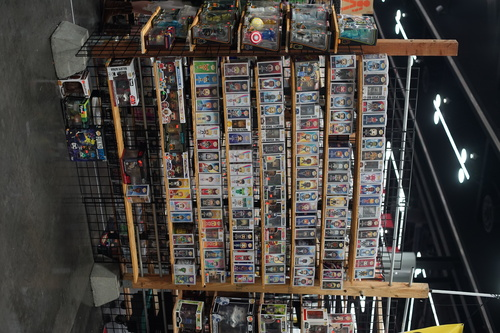
It's not a comic con without walls of Funko Pops
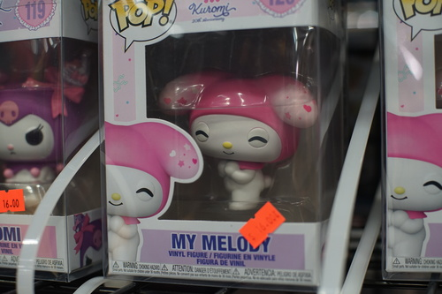
What in the...
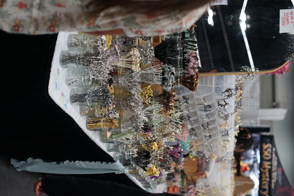
There were at least 3 booths selling drop shipped hair clips and sticks. You know the ones.
More than a couple booths sold lightsabers if you ever need one!
I've seen Siamurai Apparel a few times at other cons. I decided that I did want a pair of (preferably bunny patterned) comfy pants to wear around the house.
I was under the impression that Siamurai Pants was making their clothes in Vancouver. I asked the woman at the booth if she made them. She told me that Tom made them. I confirmed with her that Tom lived in Vancouver. She said yes. I double checked they're 100% cotton with her too. I get the pants home and turn the tag over and see "Made in Thailand". What?! I also noticed the waist ties were "finished" with loosely rolled scotch tape. I immediately ripped that off, melted the edges of cord (obviously not cotton), and tied off the ends with some thread.
I feel lied to about pants, but they are cute and comfortable. Hopefully they're paying their Thai seamstresses living wages for these clothes, but I have no idea.
I also noticed when I got home that Siamurai sells their clothes for less online. The pants I bought had a $15 increase over the online price. They come out to the same price when you include shipping from Canada. If you'd like to buy more than one item, I highly suggest ordering online instead of in person.
I noticed 2 more booths were selling clothes made from the same fabric prints. Soulzential had some, but also were mostly limited to tops. I didn't check if their tags had their country of origin.
I believe the third booth with similar prints and styles was Ingkarat Apparel. The tags clearly said "made in Indonesia".
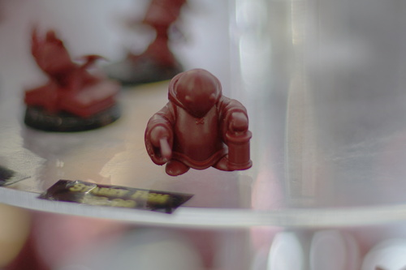
teeny tiny Tonkatsu from Final Fantasy
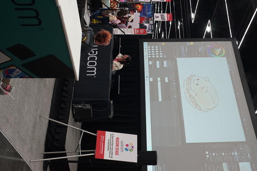
Wacom had a booth with live demos by artists on stage! I wanted to try their more expensive tablets, but they only had the cheaper ones (hahaha...) out for attendees to try. I think the 2025 Cintiq 16 was the most expensive option we were allowed to touch.
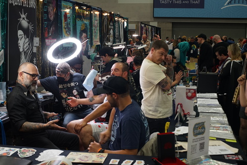
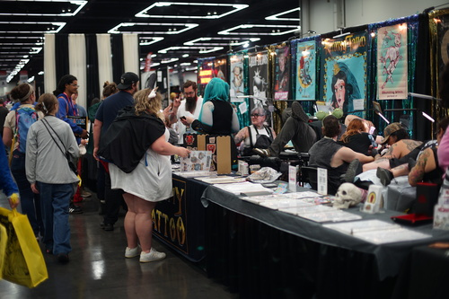
There was a whole row of booths for getting convention tattoo?! Yikes...
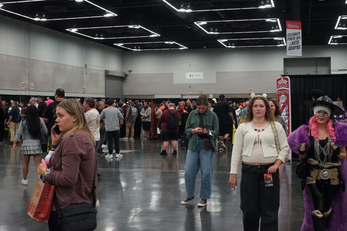
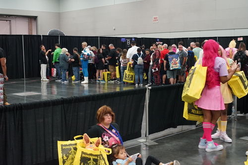
It's amazing how much space in the vendor's hall is devoted to autograph lines! Attendees love autographs!
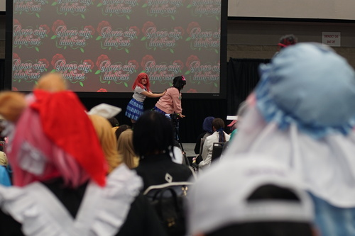
There was some sort of an idol contest going on. I'm pretty sure I just transported myself to Kumoricon.
We left the building once to go eat and then came back. We couldn't find the correct entrance!? All the doors were exit only! We eventually found an entrance that forced us to walk through another empty line maze. Security didn't wand us this time!
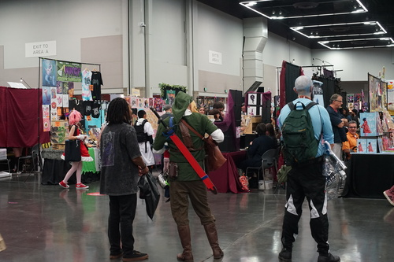
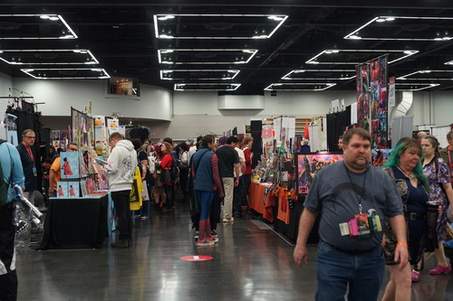
The AA had some booths of people selling comics which were not flashy like modern AA booths. It felt a little more doujinshi than American AA. There was also a whole section for writers to sell their books.
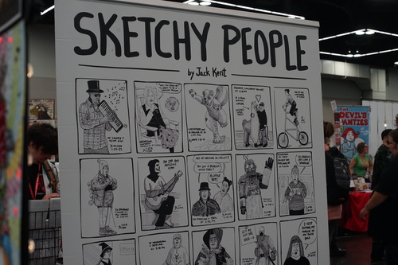
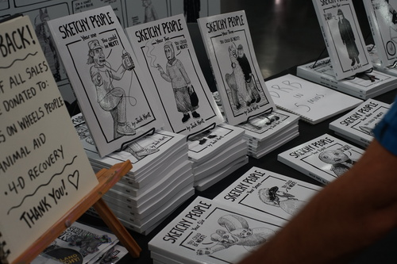
Jack Kent sketches people he sees around Portland and he's seen some interesting people. Portland has no shortage of them.
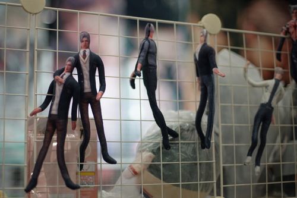
Chinese predatory gacha boyfriends in tube form
We wandered upon the booth of Unlicense Karebear who had a very nice art book! It was hardcover and about half of it was rough sketches. I wish it had been offered in a softcover version.
Chiogiri had a booth of her own gay boys. She's writing webcomics! Check em out~
Elesq had some lovely art! There's a few object heads, which I'm not into, but I was otherwise interested in her work! She had originals for sale as well. It looked like she had a zine for sale, but it sold out before we got there.
Hyde Angelus had some very cool art. It felt very Greek and Roman mythology inspired.
We went looking for Yumepop in the AA and there was another booth at the location I had written down! I'm not sure if the artist had canceled or what the heck happened, but I never found Yumepop.
I saw a few Konata in the AA and I asked the artists at the booth if they had any Yuki Nagato, but no one had Yuki! Kumoricon please??
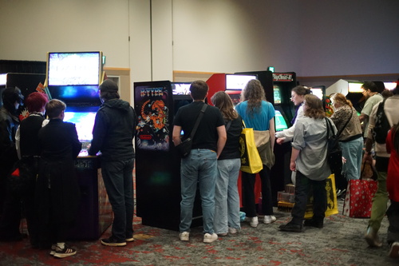
There were 2 gaming rooms. The smaller one was Ground Kontrol Classic Arcade. They had cabs and pinball mostly.
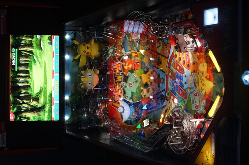
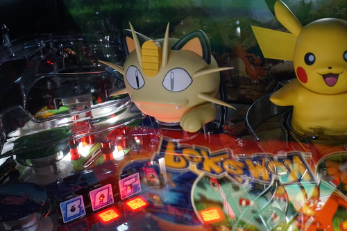
I tried this Pokemon Pinball machine and quickly realized I have no idea how to play pinball.
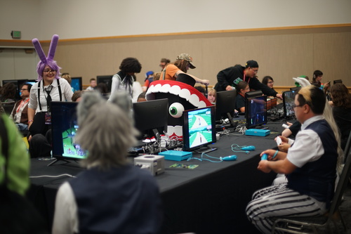
big teeth
The second one was Portland Retro Gaming Expo and a lot larger. These were console games at this one. I'm still shocked every time I see that a virtual boy isn't meant to be strapped to your face.
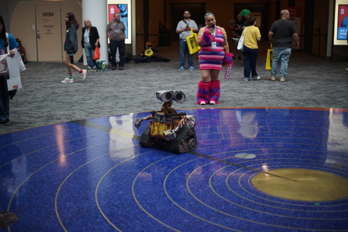
A man was showing off his little robots in the hall. His WALL-E was super kawaii~
We stopped by the Ultimate Star Wars Fan Experience~
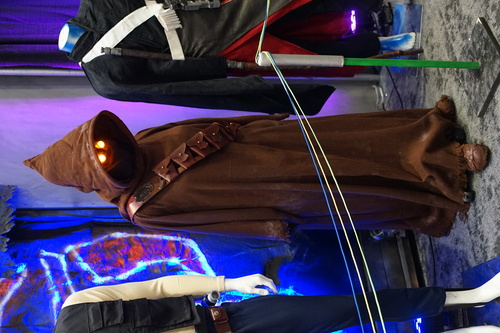
Tonkatsu from Final Fantasy
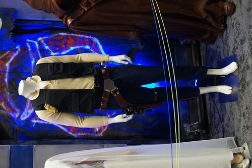
Squall from Final Fantasy 8
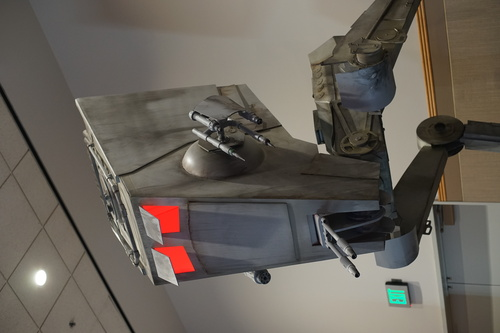
Very tall walking machine (stationary)
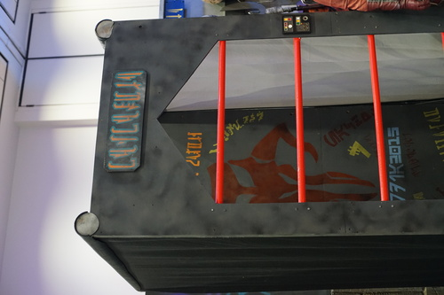
Chick-Fil-A pop up shop
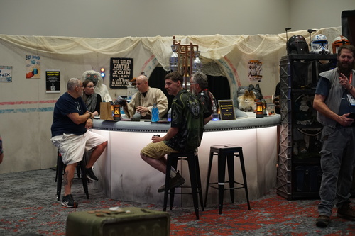
The Bar
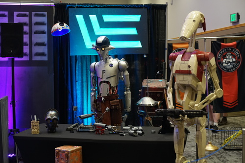
$5 suggested donation
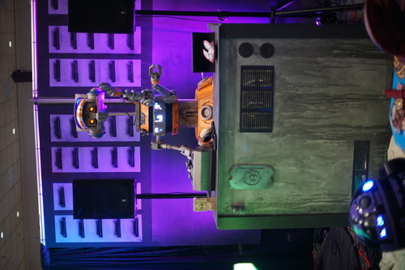
a DJ with no music
A man in a Tonkatsu costume snuck up behind me to scare me! KYAAAAAA
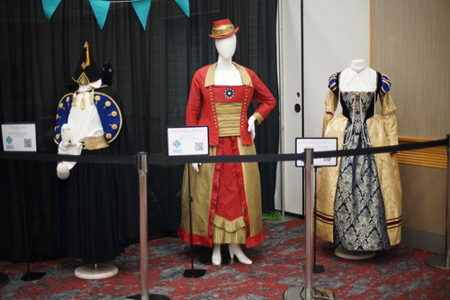
I stopped by the cosplay repair station because I have like 5 bobby pins to my name. They had some nice costumes on display.
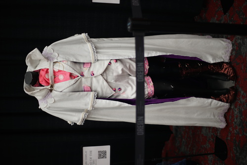
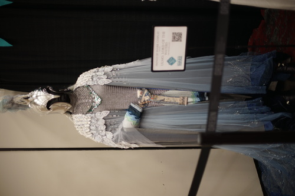
And what you've all been waiting for, every single time... The haul!!
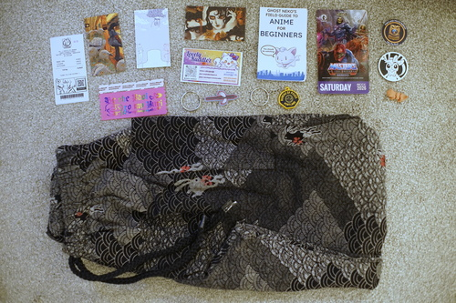
NO I didn't buy a mystery junk box!!!
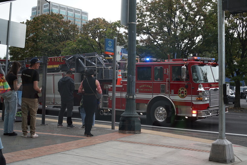
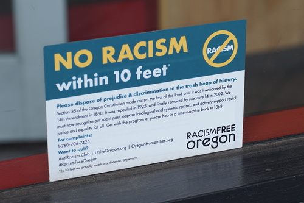